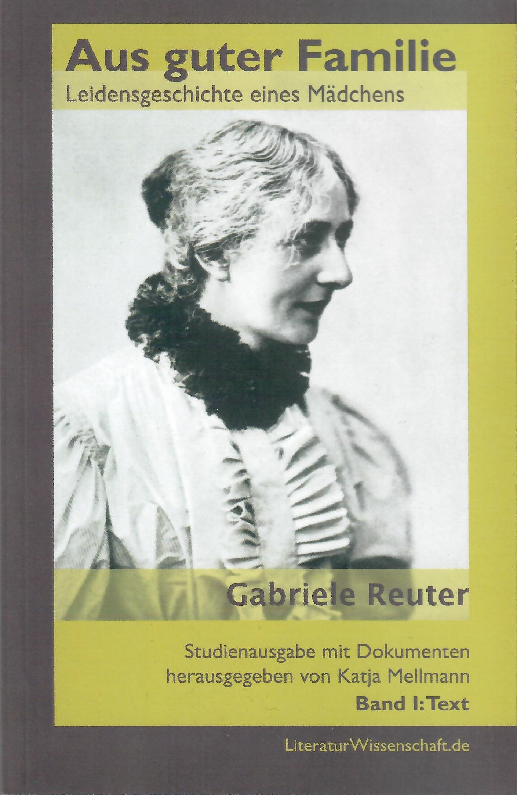
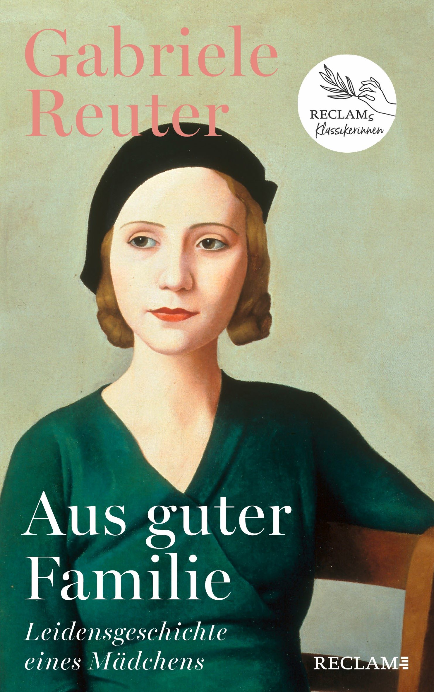

5. Gabriele Reuter, die Autorin (40')
Reflexion
Was erwarten Sie von der Lektüre? Schauen Sie sich die Bilder und den Titel genau an und notieren Sie in Ihr Lesejournal, was Sie von der Lektüre erwarten.

Titelbild der Ausgabe von 2006.

Titelbild der Ausgabe von 2024.
Auf dem Titelbild des Romans sehen Sie die Autorin Gabriele Reuter abgebildet. Der Roman war Ende des 19. Jahrhunderts sehr erfolgreich und begeisterte viele Männer und Frauen. Weshalb geriet er wieder in Vergessenheit? Diese Frage wird uns bis zum Schluss dieses Lehrgangs beschäftigen. Könnte es daran liegen, dass Gabriele Reuter eine Frau war?
Dr. Katja Mellmann hat den Roman 2006 wieder herausgegeben und alle dazugehörigen Dokumente, die gefunden werden konnten, überarbeitet, sortiert und in einem Begleitband veröffentlicht. Im folgenden Abschnitt hören Sie, was die Herausgeberin motiviert hat, den Roman wieder zugänglich zu machen.
Wie sind Sie dazu gekommen, den Roman «Aus guter Familie» herauszugeben?
Dr. Katja Mellmann spricht über ihre Motivation, dieses Buch herauszugeben, 2024.
Was bedeutet «Rezeption»?
Wie wurde Mellmann auf diesen Roman aufmerksam?
Was motivierte Mellmann, diesen Roman erneut herauszugeben und so dem gegenwärtigen Publikum wieder zugänglich zu machen?
Wer war Gabriele Reuter?
Dr. Katja Mellmann spricht über die Autorin Gabriele Reuter, 2024.
- Gabriele Reuters Leben
1859-1941
Gabriele Reuter (1859-1941) stammt aus einer deutschen Grosskaufmannsfamilie. Einen Teil ihrer Kindheit verbringt sie in Ägypten. Wegen eines Betrugsfalls im väterlichen Geschäft verliert die Familie einen Teil ihres Vermögens. Dennoch geniesst Gabriele Reuter eine standesgemässe höhere Schulbildung.
- Familie in Armut
ab den 1870er Jahren
Das Geschäft des Vaters ist verlustreich, er stirbt 1872 überraschend, die Familie verarmt. Gabriele Reuter bricht ihre Ausbildung ab, pflegt die Mutter und weiss, dass sie ihr Brot später selber verdienen muss.
- Zeit als Schriftstellerin
ab den 1880er Jahren
Ab 1887 veröffentlicht Reuter mehrere Romane und andere Werke. Ihr beliebtester Roman, «Aus guter Familie», erscheint 1895. (Vgl. AgF, Zeittafel ab S. 291.)
Die Arbeit am Roman «Aus guter Familie» geht nur schleppend voran, vielfach unterbrochen durch Mutlosigkeit und Selbstzweifel. Reuter pflegt neben dem Schreiben ihre Mutter, lebt isoliert und ist überlastet. (Vgl. Mellmann 2006, S. 312)
- «Aus guter Familie» erscheint
1895
Das Werk mit dem sozialkritisch-plakativen Titel «Aus guter Familie» machte Gabriele Reuter über Nacht berühmt. Die 28. und letzte Auflage erschien 1931. (Vgl. Mellmann 2006, S. 316) Seither ist das Buch in Vergessenheit geraten. Es wurde also auch nicht kanonisiert.
Der Roman erzählt nicht das Leben von Reuter selbst. Dennoch weist er einzelne autobiografische Züge auf.
Gabriele Reuter hat
Ordnen Sie die Erklärungen den Fachbegriffen zu.
Ziehen Sie die Antworten auf die passende Aussage — oder antippen und dann die Zeile anklicken.
Wie kam Gabriele Reuter zu ihrer Arbeit als Schriftstellerin?
Dr. Katja Mellmann spricht über Reuters schriftstellerische Arbeit, 2024.
Kreuzen Sie die zutreffenden Aussagen an.
Was bedeutet «Mädchen»?
Dr. Katja Mellmann spricht über den Begriff «Mädchen» und den historischen Hintergrund des Romans, 2024.
Der Roman «Aus guter Familie» trägt den Untertitel «Leidensgeschichte eines Mädchens». Was bedeutet Mädchen in diesem Zusammenhang?
Der Untertitel benennt das Thema des Romans. Für das zeitgenössische Publikum war deshalb klar, dass der Roman von einer unverheirateten Frau handelt, die unter ihrer Ehelosigkeit leidet.
Reflexion
Notieren Sie sich in Ihr Lesejournal, was Gabriele Reuter und den Roman «Aus guter Familie» besonders machen. Berücksichtigen Sie folgende Punkte: